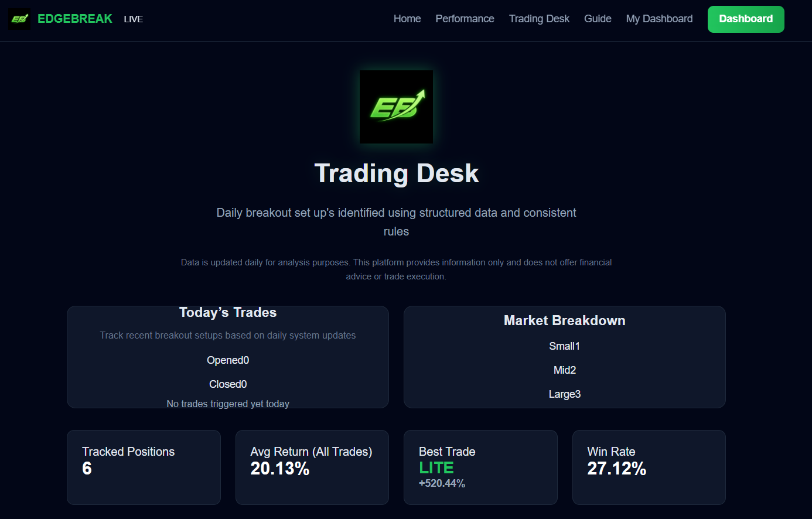
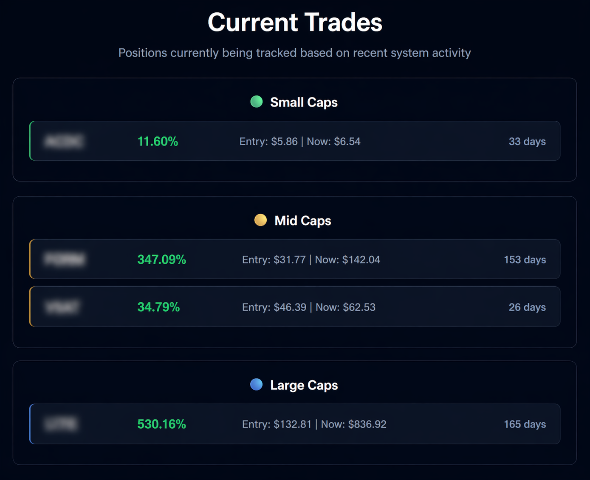
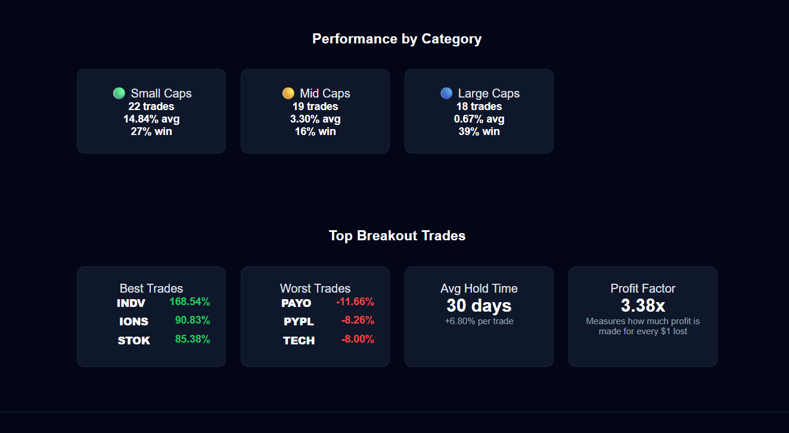
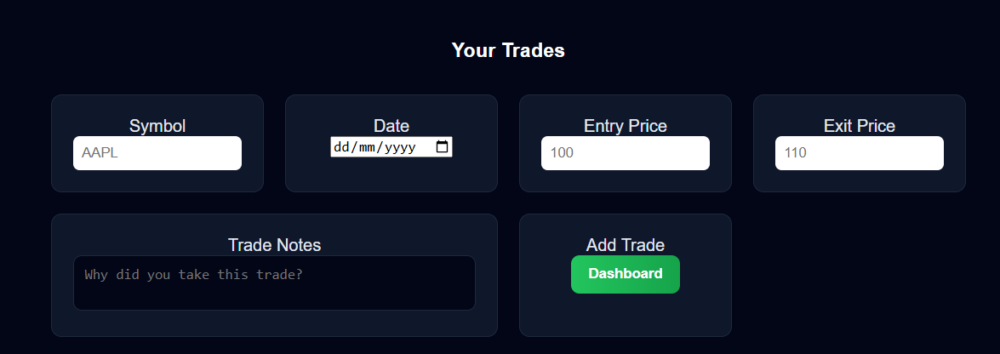
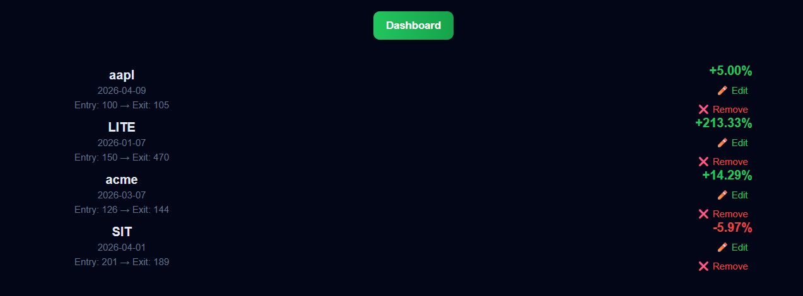
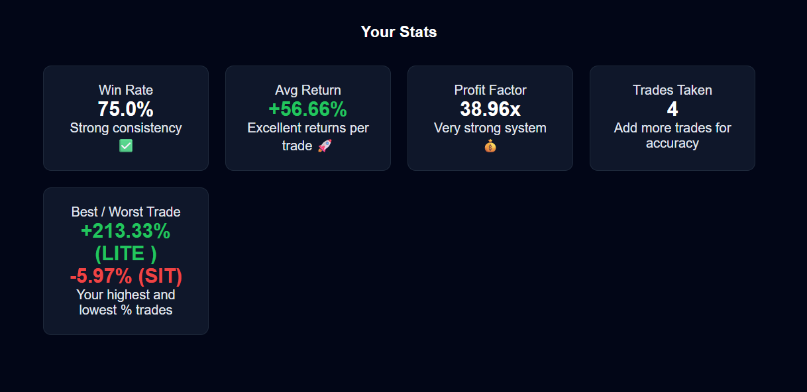
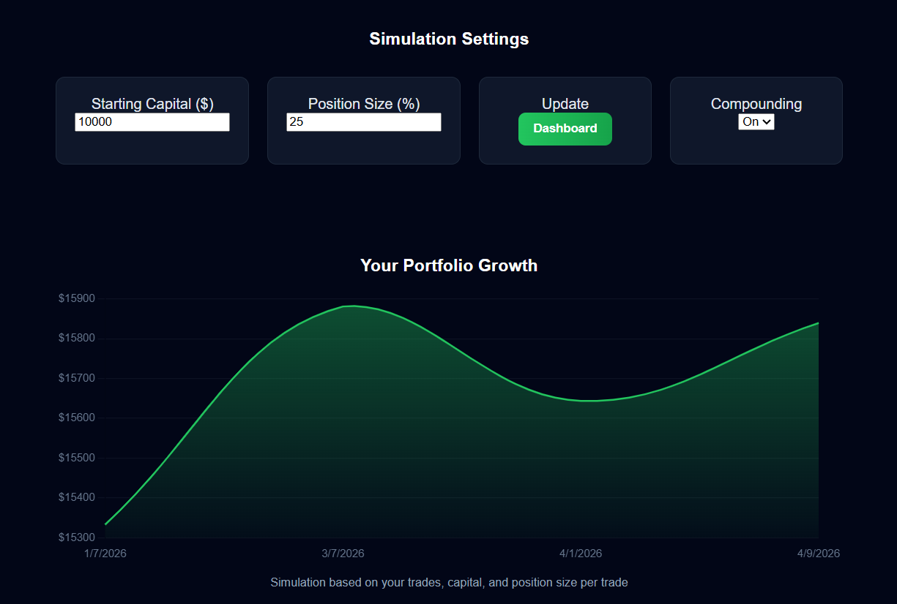
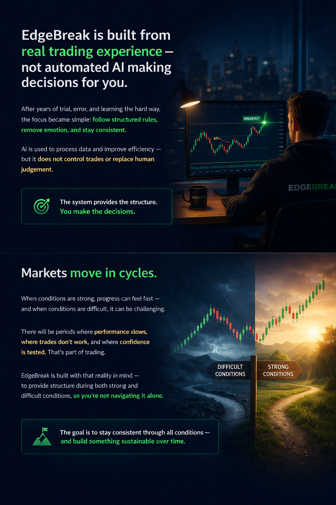

Built for traders who know the basics — but want a clearer, more structured way to analyse setups and track performance.
Access real tracked trades • See exactly how positions are managed • No signals • No black-box AI
For analysis purposes only • Not financial advice
Access real trades, track how they are managed, and see every position from entry through to exit using structured market data.
Most traders fail because they can’t see what they’re doing wrong. This fixes that.

View all active breakout setups in one place and see exactly what trades are currently being tracked.
Real positions. Real market conditions. No hidden activity.

Follow each position as it develops with entry price, movement, and time in trade clearly displayed.
Understand how trades are handled — not just where they start.

Every trade is tracked and summarised, including wins, losses, and overall system performance.
Nothing hidden. No cherry-picked results.
Track your trades, measure performance, and understand your results with complete clarity.

Record every trade with entry, exit, and notes to build a clear history of your decisions.
Build discipline through structured tracking.

See your win rate, average return, and performance metrics update instantly.
Understand what’s working — and what isn’t.

Break down results across trades to see consistency, risk, and overall system behaviour.
No hidden results. Full transparency.

Test how your trades perform over time using position sizing and compounding.
See the long-term impact of your decisions.
EdgeBreak is built on real trading experience — not AI trading signals or automated systems.
Designed for traders who want structured trading, clear rules, and consistent execution using real market data.
The system provides structure. You stay in control.

The stock market moves in cycles. Some periods perform well — others don’t.
Losses, drawdowns, and slow performance are part of trading. This system is built to manage both strong and difficult conditions.
Focus on consistency, risk management, and long-term performance.
A structured trading system built to help traders analyse breakout setups, manage trades, and stay consistent in real market conditions.
"The structure is what makes it different. It’s not just data — it’s a complete trading system."
— Amanda C
"Fewer trades, but a stronger focus on high-quality breakout setups. That’s where the edge comes from."
— Ryan H
"It filters out the noise and helps me focus on real market structure instead of guessing."
— Chris C
EdgeBreak isn’t just about identifying setups — it’s about developing a more structured, data-driven approach. Track your results, analyse performance, and build consistency over time.
Access the live system — including breakout setups, tracked positions, and detailed performance analytics.
● System Active
Monitor breakout setups as they develop, with real-time updates on price movement, tracked levels, and trade status — alongside weekly insights and system updates on market conditions.
● Tracked Results
Based on tracked breakout setups observed over extended market periods.
Examples may include tracked and simulated outcomes used for analysis. Past performance is not indicative of future results.
● Continuously Tracked
Follow tracked positions as they develop over time, with structured frameworks designed to support analysis of risk and performance.
Daily breakout setups and tracked positions — full details available to members
All tracked trades are recorded to provide a consistent view of system performance over time, with both positive and negative outcomes included.
The system is designed to focus on identifying breakout conditions that can influence overall performance over time.
Both positive and negative outcomes are included to support a balanced view of performance.
Access the trading desk to explore daily breakout setups, tracked positions, and performance data.
Enter Trading DeskData-driven breakout trading system designed to analyse and track breakout setups using structured market data
© 2026 EdgeBreak • All rights reserved